Rifu
Rifu · Miyagi
Rifu
Highlighted on the Miyagi map.
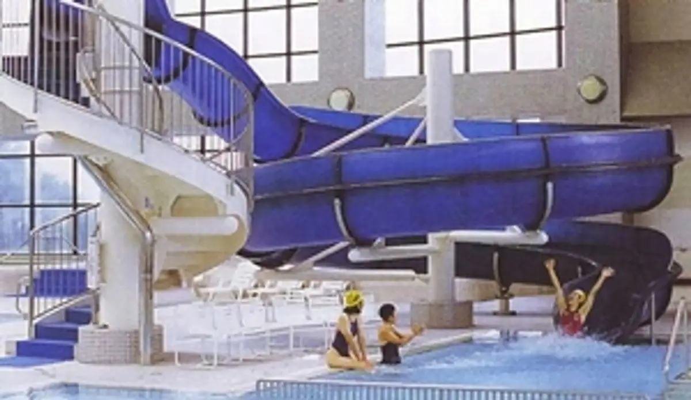
Stay
ホテルルートイン利府
Hoteruruutoin Rifu
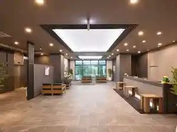
SOU.-SAUNA&HOTEL-
SOU.-SAUNA&HOTEL-
沢乙温泉 里山旬味 うちみ旅館
Sawa Otsu Onsen Satoyama Jun Aji Uchimi Ryokan
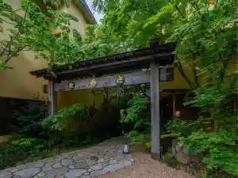
民宿ハーバーハウスかなめ
Minshuku Haabaahausu Kaname
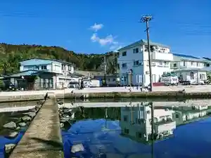
Dining
らーめん 三福
Raamen Sanpuku
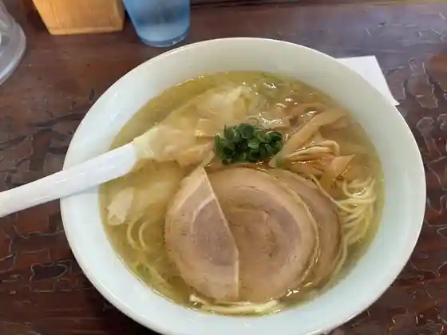
麺屋久兵衛
Men Yaku Bee
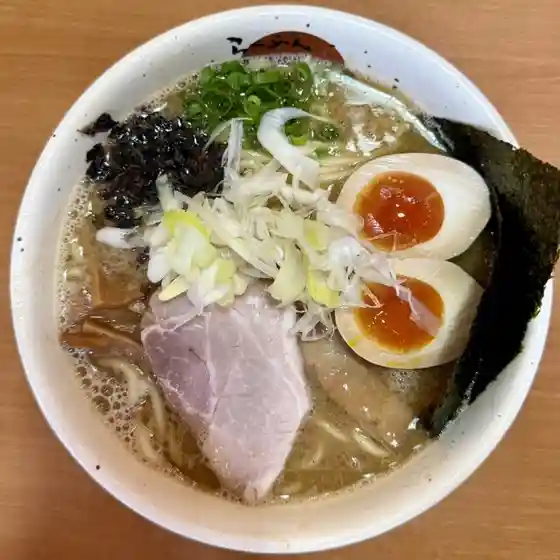
らーめんかいじ 利府店
Raamenkaiji Rifu Mise
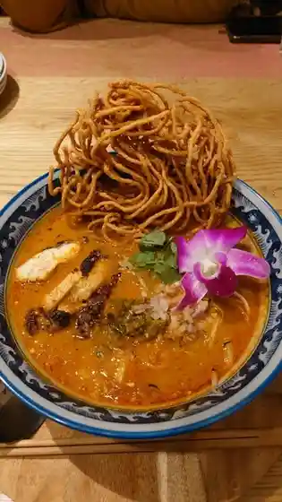
コナズ珈琲 利府店
コナズ珈琲 利府店
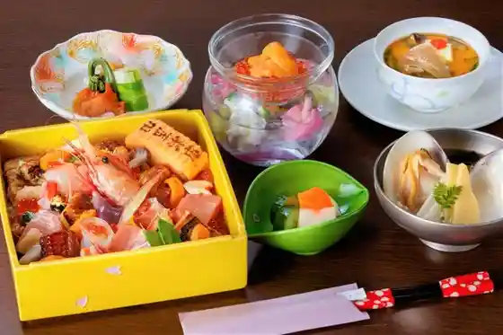
田里津庵
Tazato Tsu Iori
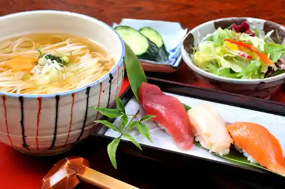
稲庭うどん 瀧さわ家
Inaniwa Udon Taki Sawa Ie
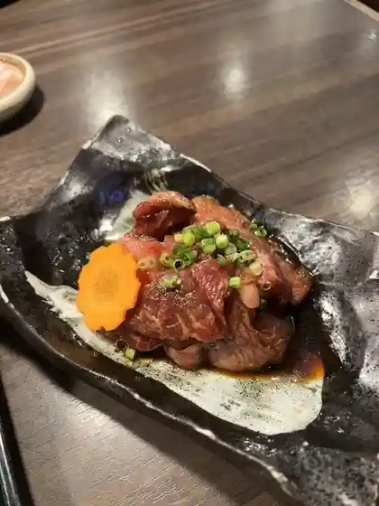
山形黒毛和牛 米沢牛焼肉 仔虎 利府店
Yamagata Kuroge Wagyuu Yonezawa Ushi Yakiniku Shi Tora Rifu Mise
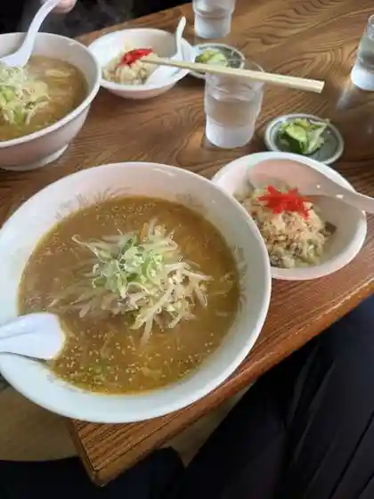
こまつや
Komatsuya
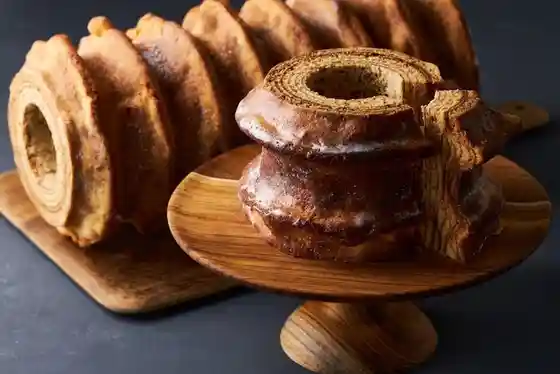
mou mol molle
mou mol molle
味噌ラーメン はちべえ
Miso Raamen Hachibee
麺匠 大黒 利府中インター店
Men Takumi Daikoku Rifu Naka Intaa Mise
北京
Pekin
ラーメンショップ 加瀬店
Raamenshoppu Kase Mise
ドムドム ハンバーガー イオンモール新利府北館店
Domudomu Hanbaagaa Ionmooru Shin Rifu Kitakan Mise
Café Restaurant BONANZA
Caf Restaurant BONANZA
利府ゴルフ倶楽部
Rifu Gorufu Kurabu
五穀 利府店
Gokoku Rifu Mise
サンタカフェ
Santakafe
まぐろ屋 やまもと イオンモール新利府店
Maguro Ya Yamamoto Ionmooru Shin Rifu Mise
十割そば 利府庵
Juu Wari Soba Rifu Iori
モラモラカフェ
Moramorakafe
カフェレストラン・アリーノ
カフェレストラン・アリーノ
GODIVA イオンモール新利府南館店
Godiva Ionmooru Shin Rifu Minamidate Mise
ヴェル ドゥーラ
Veru Douura
和風れすとらん加瀬
Wafuu Resutoran Kase
ばーすでい 利府菅谷台本店
Baasudei Rifu Sugaya Daihon Mise
自家製麺 いちむら 弍
Jikasei Men Ichimura Ni
mameiro イオンスタイル新利府店
Mameiro Ionsutairu Shin Rifu Mise
生石庵
Shouseki Iori
かき焼処
Kaki Yaki Tokoro
仙台辛み噌ラーメン 味よし イオンモール新利府店
Sendai Karami So Raamen Aji Yoshi Ionmooru Shin Rifu Mise
宝中飯店
Takara Naka Hanten
cafe ソノヒノキブン
cafe ソノヒノキブン
ウジエスーパー 利府店
Ujiesuupaa Rifu Mise
コション パティスリーカフェ
Koshon Pateisuriikafe
U cafe 利府店
U cafe
牛たんkitchenきすけ イオンモール新利府店
Ushi Tan Kitchen Kisuke Ionmooru Shin Rifu Mise
カルビ丼とスン豆腐専門店 韓丼 利府店
Karubi Donburi To Sun Toufu Senmonten Kan Donburi Rifu Mise
フレッシュ ヤマトク 本店
Furesshu Yamatoku Honten
浦嶋荘
Urashima Sou
伊藤商店 利府店
Itou Shouten Rifu Mise
Rojiura Curry SAMURAI. 新利府南館店
Rojiura Curry SAMURAI.
かつグルメ 利府店
Katsu Gurume Rifu Mise
食事処 伊達商店
Shokuji Tokoro Date Shouten
京屋台 中華そば 古都ら イオンモール新利府北館店
Kyouya Dai Chuuka Soba Koto Ra Ionmooru Shin Rifu Kitakan Mise
マルハのカルビ丼 イオンモール新利府 南館店
Maruha No Karubi Donburi Ionmooru Shin Rifu Minamidate Mise
ドライブイン化粧坂
Doraibuin Keshou Saka
そば処・梨郷
そば処・梨郷
spica
spica
Patisserie Hacchi
Patisserie Hacchi
獅子茶
Shishi Cha
吉田シフォン
Yoshida Shifon
デイリーポート新鮮館 利府店
Deiriipooto Shinsen Kan Rifu Mise
上海常 イオンモール新利府店
Shanhai Tsune Ionmooru Shin Rifu Mise
すし清次郎 イオンモール新利府店
Sushi Seijirou Ionmooru Shin Rifu Mise
アグリエの森 Leaf marche
Leaf marche
牛角食べ放題専門店 利府ペアガーデン店
Gyuukaku Tabe Houdai Senmonten Rifu Peagaaden Mise
BALLER:S
BALLERS
ホテルルートイン利府
Hoteruruutoin Rifu
インド料理 SALAAR
SALAAR
果汁工房果琳 イオンモール新利府店
Kajuu Koubou Ka Rin Ionmooru Shin Rifu Mise
ビアードパパの作りたて工房 イオンモール新利府店
Biaadopapa No Tsukuri Tate Koubou Ionmooru Shin Rifu Mise
利府珈琲茶寮
Rifu Koohii Charyou
民宿ハーバーハウスかなめ
Minshuku Haabaahausu Kaname
らーめん堂仙台っ子 利府店
Raamen Dou Sendai Tsu Ko Rifu Mise
肉のはせ川 利府店
Niku Nohase Kawa Rifu Mise
Italian Kitchen VANSAN イオンモール新利府南館店
Italian Kitchen VANSAN
石窯パン工房 パンセ 利府本店
Ishigama Pan Koubou Panse Rifu Honten
丸亀製麺 イオンモール利府
Marugame Seimen Ionmooru Rifu
赤い屋根
Akai Yane
とんかつ新宿さぼてん イオンモール新利府南館店
Tonkatsu Shinjuku Saboten Ionmooru Shin Rifu Minamidate Mise
ラーメン魁力屋 イオンモール新利府店
Raamen Kai Chikara Ya Ionmooru Shin Rifu Mise
メゾン・ド・フランス
メゾン・ド・フランス
肉匠 鈴吉 イオンモール新利府店
Niku Takumi Suzuyoshi Ionmooru Shin Rifu Mise
サーティーワンアイスクリーム イオンモール新利府南館店
Saateiiwan'aisukuriimu Ionmooru Shin Rifu Minamidate Mise
AEON CINEMA 新利府
AEON CINEMA
口福堂 イオンモール新利府店
Koufuku Dou Ionmooru Shin Rifu Mise
やっぱりステーキ イオンモール新利府南館店
Yappari Suteeki Ionmooru Shin Rifu Minamidate Mise
びっくりドンキー 利府店
Bikkuri Donkii Rifu Mise
星乃珈琲店 イオンモール新利府店
Hoshino Koohii Mise Ionmooru Shin Rifu Mise
Heart Bread ANTIQUE イオンモール新利府南館店
Heart Bread ANTIQUE
スターバックスコーヒー イオンモール新利府南館1階店
Sutaabakkusukoohii Ionmooru Shin Rifu Minamidate 1 Kai Mise
松屋 春日PA下り線店
Matsuya Kasuga Pa Kudari Sen Mise
カトーマロニエ 本店
Katoomaronie Honten
ミニストップ 春日PA下り店
Minisutoppu Kasuga Pa Kudari Mise
レーブ・ド・ルピナス
レーブ・ド・ルピナス
しゃぶしゃぶ但馬屋 イオンモール新利府南館店
Shabushabu Tajima Ya Ionmooru Shin Rifu Minamidate Mise
こけし庵
Kokeshi Iori
アグリサンタハウス
Agurisantahausu
喜久水庵 イオンモール新利府 北館店
Yoshihisa Mizu Iori Ionmooru Shin Rifu Kitakan Mise
Bread Factory パン工場 イオンスタイル新利府店
Bread Factory
十ちゃんの台所
Juu Channo Daidokoro
イオンスタイル 新利府
Ionsutairu Shin Rifu
こもれび
Komorebi
tsumiki
tsumiki
フロ プレステージュ イオンモール新利府店
Furo Puresuteeju Ionmooru Shin Rifu Mise
サンズフルーツパーラー果蔵
Sanzufuruutsupaaraa Ka Kura
味噌乃屋 田所商店 イオンモール新利府南館店
Miso No Ya Tadokoro Shouten Ionmooru Shin Rifu Minamidate Mise
コメダ珈琲店 利府店
Komeda Koohii Mise Rifu Mise
大志軒 利府店
Taishi Ken Rifu Mise
テキサスキングステーキ イオンモール新利府南館店
Tekisasukingusuteeki Ionmooru Shin Rifu Minamidate Mise
牛たん炭焼 利久 イオンモール新利府店
Ushi Tan Sumiyaki Toshihisa Ionmooru Shin Rifu Mise
珈琲館 利府店
Koohii Kan Rifu Mise
スターバックスコーヒー 利府街道店
Sutaabakkusukoohii Rifu Kaidou Mise
虎包 イオンモール新利府北館店
Tora Tsutsumi Ionmooru Shin Rifu Kitakan Mise
魚べい 利府店
Sakana Bei Rifu Mise
マクドナルド イオンモール新利府店
Makudonarudo Ionmooru Shin Rifu Mise
H's CREAM イオンモール利府店
H&39s CREAM
沢乙温泉 里山旬味 うちみ旅館
Sawa Otsu Onsen Satoyama Jun Aji Uchimi Ryokan
あじわいの朝 利府店
Ajiwaino Asa Rifu Mise
ねこねこチーズケーキ イオンモール新利府南館店
Nekoneko Chiizukeeki Ionmooru Shin Rifu Minamidate Mise
LUPICIA イオンモール新利府南館店
Lupicia Ionmooru Shin Rifu Minamidate Mise
ふれあいマルシェ
Fureai Marushie
吉野家 ＦＣ利府店
Yoshinoya F C Rifu Mise
ココス 利府店
Kokosu Rifu Mise
和風レストランまるまつ 利府店
Wafuu Resutoran Marumatsu Rifu Mise
マクドナルド 利府街道店
Makudonarudo Rifu Kaidou Mise
松屋 春日PA上り線店
Matsuya Kasuga Pa Nobori Sen Mise
サイゼリヤ イオンモール新利府店
Saizeriya Ionmooru Shin Rifu Mise
くら寿司 利府店
Kura Sushi Rifu Mise
SUBWAY イオンモール新利府北館店
Subway Ionmooru Shin Rifu Kitakan Mise
ドトールコーヒーショップ イオンモール新利府南館店
Dotoorukoohiishoppu Ionmooru Shin Rifu Minamidate Mise
バーガーキング イオンモール新利府店
Baagaakingu Ionmooru Shin Rifu Mise
ミスタードーナツ イオンモール新利府南館ショップ
Misutaadoonatsu Ionmooru Shin Rifu Minamidate Shoppu
果汁工房 果琳 イオンモール新利府 北館
Kajuu Koubou Ka Rin Ionmooru Shin Rifu Kitakan
菓匠三全 イオンモール新利府 南館店
Kashousanzen Ionmooru Shin Rifu Minamidate Mise
ミスタードーナツ イオンモール新利府北館ショップ
Misutaadoonatsu Ionmooru Shin Rifu Kitakan Shoppu
Dipper Dan CREPE イオンモール新利府 北館店
Dipper Dan CREPE
週末びっくり市 利府店
Shuumatsu Bikkuri Shi Rifu Mise
千の桜
Sen No Sakura
久世福商店 イオンモール新利府南館店
Kuze Fuku Shouten Ionmooru Shin Rifu Minamidate Mise
カフェレストラン バンビーナ
Kaferesutoran Banbiina
スーパーセンタートライアル 利府店
Suupaasentaatoraiaru Rifu Mise
いしのまき
Ishinomaki
ラーゴム珈琲豆店
Raagomu Koohii Mame Mise
Rire
Rire
グラン珈琲
Guran Koohii
3COINS+plus イオンモール新利府店
3COINSplus
ドン・キホーテ 利府店
ドン・キホーテ 利府店
ローソン 利府森郷店
Rooson Rifu Mori Sato Mise
サトー商会 利府ペアガーデン店
Satoo Shoukai Rifu Peagaaden Mise
阿部蒲鉾店 イオンモール新利府 北館店
Abe Kamaboko Mise Ionmooru Shin Rifu Kitakan Mise
無印良品 利府ライフガーデン店
Mujirushiryouhin Rifu Raifugaaden Mise
幸楽苑 利府森郷店
Kouraku En Rifu Mori Sato Mise
モスバーガー 宮城利府店
Mosubaagaa Miyagi Rifu Mise
築地銀だこ イオンモール新利府南館店
Tsukiji Gin Dako Ionmooru Shin Rifu Minamidate Mise
築地銀だこ イオンモール新利府北館店
Tsukiji Gin Dako Ionmooru Shin Rifu Kitakan Mise
韓美膳
Kan Bi Zen
から揚げの天才 イオンモール新利府 北館店
Kara Age No Tensai Ionmooru Shin Rifu Kitakan Mise
築地食堂 源ちゃん イオンモール新利府南館店
Tsukiji Shokudo Gen Chan Ionmooru Shin Rifu Minamidate Mise
カフェ グランブルー
Kafe Guranburuu
笑家
Warai Ie
すし処ウサ見
Sushi Tokoro Usa Ken
開運丸
Kaiun Maru
食堂さくら
Shokudo Sakura
陶樹
Tou Ki
ハイボール酒場 シロクマ
Haibooru Sakaba Shirokuma
スターバックスコーヒー イオンモール新利府南館2階店
Sutaabakkusukoohii Ionmooru Shin Rifu Minamidate 2 Kai Mise
ケンタッキーフライドチキン イオンモール新利府北館店
Kentakkiifuraidochikin Ionmooru Shin Rifu Kitakan Mise
銀座惣菜店
Ginza Souzai Mise
LEMONADE by Lemonica イオンモール新利府店
LEMONADE by Lemonica
シャトレーゼ 利府店
Shatoreeze Rifu Mise
牛角焼肉食堂 イオンモール新利府北館店
Gyuukaku Yakiniku Shokudo Ionmooru Shin Rifu Kitakan Mise
Pastel イオンモール新利府南館店
Pastel Ionmooru Shin Rifu Minamidate Mise
コージーコーナー イオン利府店
Koojiikoonaa Ion Rifu Mise
養老乃瀧 利府駅前店
Yourou No Taki Rifu Ekimae Mise
おむすび源ちゃん 新利府店
Omusubi Gen Chan Shin Rifu Mise
ほっともっと 利府中央店
Hottomotto Rifu Chuuou Mise
パン工場 利府店
Pan Koujou Rifu Mise
ねこねこ食パン イオンモール新利府南館店
Nekoneko Shoku Pan Ionmooru Shin Rifu Minamidate Mise
こーひーしょっぷ「ペア・パル」
こーひーしょっぷ「ペア・パル」
菓々yaki
yaki
カルディコーヒーファーム イオンモール新利府店
Karudikoohiifaamu Ionmooru Shin Rifu Mise
食事処 かず 利府店
Shokuji Tokoro Kazu Rifu Mise
蒲鉾本舗高政 ヨークベニマル利府店
Kamaboko Honpo Takamasa Yookubenimaru Rifu Mise
ファミリーマート 利府街道店
Famiriimaato Rifu Kaidou Mise
ミニストップ 春日パーキングエリア(PA)上り店
Minisutoppu Kasuga Paakingueria (pa ) Nobori Mise
ワンダーカレー
Wandaakaree
ウィズマム ヨークベニマル利府野中店
Uizumamu Yookubenimaru Rifu Nonaka Mise
活魚料理 やすらぎ
Ikeuo Ryouri Yasuragi
菜の花村 利府店
Na No Hanamura Rifu Mise
セブンイレブン 利府中央3丁目店
Sebun'irebun Rifu Chuuou 3 Choume Mise
キッチンポトス 利府店
Kitchinpotosu Rifu Mise
Le Cresson ウジエスーパー利府店
Le Cresson
すたみな太郎PREMIUM BUFFET 利府店
PREMIUM BUFFET
イオンモール 新利府 北館
Ionmooru Shin Rifu Kitakan
蒲鉾本舗 高政 イオンモール新利府店
Kamaboko Honpo Takamasa Ionmooru Shin Rifu Mise
春日屋酒店
Kasuga Ya Saketen
虎鉄
Tora Tetsu
モーメント 利府店
Moomento Rifu Mise
LAWSON 利府飯土井店
LAWSON
ててて天 イオンモール新利府南館店
Tetete Ten Ionmooru Shin Rifu Minamidate Mise
Flying Tiger Copenhagen イオンモール新利府ストア
Flying Tiger Copenhagen
白謙かまぼこ店 イオンスタイル新利府店
Shiro Ken Kamaboko Mise Ionsutairu Shin Rifu Mise
Moff animal cafe イオンモール新利府店
Moff animal cafe
パッチゲ
Patchige
ドミノ・ピザ 利府ペアガーデン店
ドミノ・ピザ 利府ペアガーデン店
だがしや
Dagashiya
こうそう 製麺科
Kousou Seimen Ka
ファミリーマート 利府青山店
Famiriimaato Rifu Aoyama Mise
甲本商店
Koumoto Shouten
humming bird
humming bird
SEA GARDEN
SEA GARDEN
裁ちそば 市庵
Tachi Soba Shi Iori
小料理・あさみ
小料理・あさみ
パティスリー ル・ボア ウジエスーパー利府店
パティスリー ル・ボア ウジエスーパー利府店
Beijing
Beijing
Taritsuan
Taritsuan
Kenrifu Pair Garden
Kenrifu Pair Garden
Kotora Rifu
Kotora Rifu
Restaurant la France 2
Restaurant la France 2
Juwari Soba Rifuan
Juwari Soba Rifuan
Ramen Mifuku
Ramen Mifuku
Ito Store Rifu
Ito Store Rifu
Restaurant Marumatsu Rifu
Restaurant Marumatsu Rifu
Nanbuyashiki Corporation Rifu
Nanbuyashiki Corporation Rifu
Pepper Lunch Aeon Mall Rifu
Pepper Lunch Aeon Mall Rifu
Ramen Shop Kase
Ramen Shop Kase
Japanese Restaurant Kase
Japanese Restaurant Kase
Fupao Rifu
Fupao Rifu
Le Ciel
Le Ciel
Ramendo Sendaikko Rifu
Ramendo Sendaikko Rifu
Mensho Daikoku Rifunaka Inter
Mensho Daikoku Rifunaka Inter
Ramen Kaiji Rifu
Ramen Kaiji Rifu
Yamacho Kadofuji Rifu
Yamacho Kadofuji Rifu
Indian Curry Santa Rifu
Indian Curry Santa Rifu
Sanuki Kamaage Udon Marukame Seimen Aeon Mall Rifu
Sanuki Kamaage Udon Marukame Seimen Aeon Mall Rifu
Mos Burger Miyagi Rifu
Mos Burger Miyagi Rifu
Kentucky Fried Chicken Aeon Mall Rifu
Kentucky Fried Chicken Aeon Mall Rifu
Arigatoya
Arigatoya
Coco s Japan
Coco s Japan
Food BuzZzur
Food BuzZzur
Staminataro Miyagi Rifu
Staminataro Miyagi Rifu
Wakabayashi Genzo Rifu Pair Garden
Wakabayashi Genzo Rifu Pair Garden
Shirokujichu Kasuga Inbound
Shirokujichu Kasuga Inbound
Ebisoba Ebisuke Aeon Mall Shinrifu
Ebisoba Ebisuke Aeon Mall Shinrifu
Murasakiya Chukamentei
Murasakiya Chukamentei
Panse Rifu Main Store
Panse Rifu Main Store
Fruit Juice Shop Karin Aeon Rifu
Fruit Juice Shop Karin Aeon Rifu
Chashuya Menya Okushu Shirakawa
Chashuya Menya Okushu Shirakawa
Oshokujidokoro Dateshoten
Oshokujidokoro Dateshoten
Rikyo Sakaba Jonetsu Hormon
Rikyo Sakaba Jonetsu Hormon
Ramen Daishiken Rifu
Ramen Daishiken Rifu
Kurahachi Aeon Mall Rifu
Kurahachi Aeon Mall Rifu
Shinkajin
Shinkajin
Ver Dura
Ver Dura
Shinshun Ya Men Sendai
Shinshun Ya Men Sendai
Ekimae Horumon Hikari
Ekimae Horumon Hikari
Trattoria Itagaki
Trattoria Itagaki
Chinese Restaurant Kinraku
Chinese Restaurant Kinraku
Drive In Keshozaka
Drive In Keshozaka
Gohan Cafe Shirokujichu Rifu
Gohan Cafe Shirokujichu Rifu
Gyutan Kitchen Kisuke Aeon Mall Shinrihu
Gyutan Kitchen Kisuke Aeon Mall Shinrihu
Rikyu Aeon Mall Shinrifuminamikan
Rikyu Aeon Mall Shinrifuminamikan
Live Fish Restaurant Yasuragi
Live Fish Restaurant Yasuragi
Kurannkeri
Kurannkeri
Kandon Rifu
Kandon Rifu
Ajiyoshi Ramen Aeon Mall Shinrifu
Ajiyoshi Ramen Aeon Mall Shinrifu
Akaoni
Akaoni
Takumi No Men Bakuraku
Takumi No Men Bakuraku
Arinomi Mura
Arinomi Mura
Chinese Restaurant Miman
Chinese Restaurant Miman
Crayon Cafe
Crayon Cafe
Yabusei
Yabusei
Yoro Notaki Rifu Ekimae
Yoro Notaki Rifu Ekimae
Hochu Hanten
Hochu Hanten
Sobadokoro Nashigo
Sobadokoro Nashigo
Maison de France
Maison de France
Bambina
Bambina
Sanrian
Sanrian
Sansho
Sansho
Izakaya Honoka
Izakaya Honoka
Sushi Dokoro Usami
Sushi Dokoro Usami
Sakae Sushi
Sakae Sushi
Quick Pasta Copin Rifu
Quick Pasta Copin Rifu
Juwarisoba
Juwarisoba
Fuji
Fuji
Sushi Seijiro Aeon Mall Shin Rifu South Bldg
Sushi Seijiro Aeon Mall Shin Rifu South Bldg
Reve de Rupinasu
Reve de Rupinasu
Oishian
Oishian
Meat Hasegawa Rifu
Meat Hasegawa Rifu
31 Ice Cream Aeon Mall Rifu
31 Ice Cream Aeon Mall Rifu
Mendokoro Hekiku
Mendokoro Hekiku
Korakuen Rifu
Korakuen Rifu
Onsen
Sawaoto Onsen
Quiet hot-spring baths at Uchimi Ryokan in inland Rifu
Shop
Tofu-no-Sato Fureai-kan Farm Stand
Farm-direct produce shop beside the town folk museum
Sights
Tofu-no-Sato Park (Rifu Central Park)
Central town park with play space and seasonal gardens
Miyagi Prefectural Forest Kids Adventure Course
Field athletics course in the Prefectural Forest
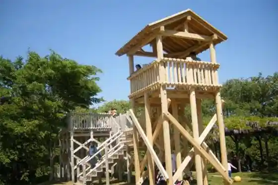
Harbor House Kaname Fishing Experience
Harbor-based fishing experience on the Rifu coast
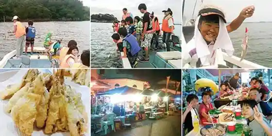
Rifu Town Folk Museum
Municipal museum of local history and culture
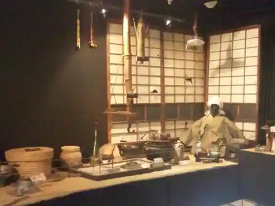
Tofu-no-Sato Fureai-kan
Farm stand and community market in central Rifu
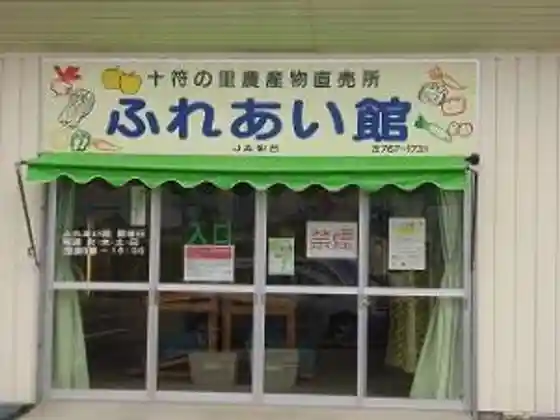
Rifu Pears
Local pear orchards and seasonal fruit stops
Grandee 21
Large sports and event complex in Rifu
Laplace Park in Kasenuma
Lakeside park area around Kasenuma
Miyagi Prefectural Forest / Youth Forest
Prefectural forest recreation area with trails and youth facilities